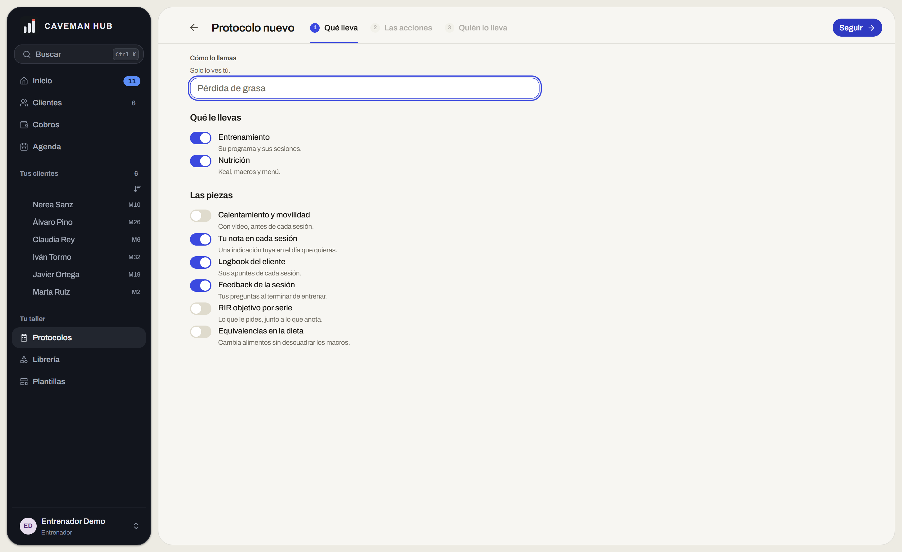
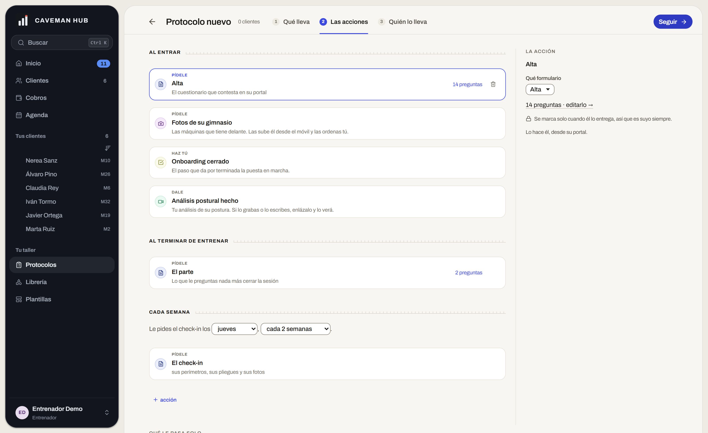
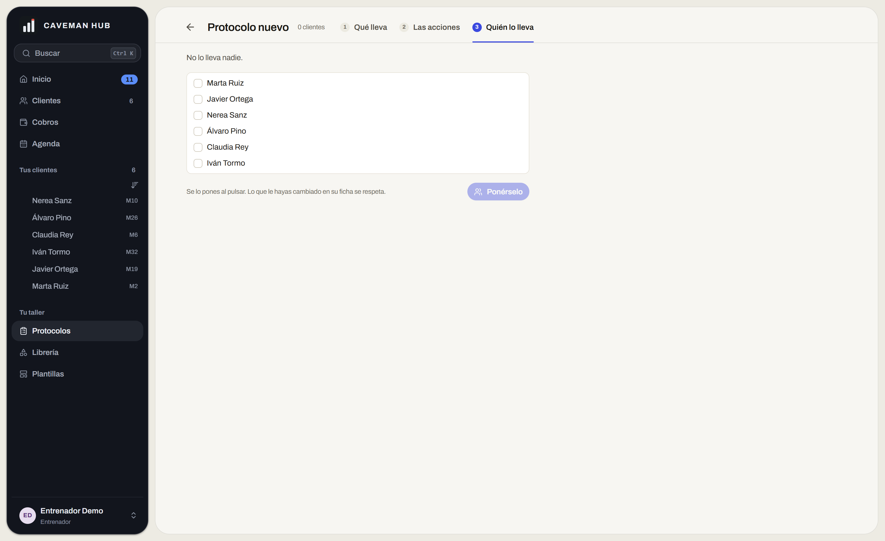

Estudio · 14 de septiembre de 2026
El botón, el campo y el interruptor. Tres piezas que salen en todas las pantallas y que son, medidas una por una, lo que hace que la aplicación no se lea como el producto que es.
«Los botones y diseños de ese estilo de la app creo que deberían tener un rediseño, no me convencen los seguir, aceptar, ajustar… El cómo se ven, poco profesionales. Creo que las startups punteras hacen las cosas distinto: no veo a ClickUp con esa interfaz.» El dueño, hoy
Lo primero que dijiste no era de diseño, era una avería: del paso ② al ③ no había «Seguir» y del ① al ② sí. Está arreglado y probado en la app en marcha.
El verbo colgaba del borrador, o sea del protocolo que aún no existe. Pulsar «Seguir» en el ① es justo lo que hace que empiece a existir: al llegar al ② el borrador ya había muerto y el botón se iba con él. Ahora lo que manda es si estás montando uno —desde «Protocolo nuevo» hasta que llegas al ③—, así que el verbo te acompaña los dos saltos y se apaga en la última parada, que ya tiene el suyo: «ponérselo a alguien». Nunca hay dos azules en pantalla.
ProtocolosPanel.jsx, estado montando. Comprobado
contra la demo local: en el ② el botón existe y lleva al ③.
Todo lo que sigue está medido con getComputedStyle sobre la app
corriendo en local, a 1600 px y con la demo sembrada. Ninguna cifra sale de
leer la hoja de estilos.

El botón es una píldora —radio 999— y a su lado el campo y la tarjeta son 14, y los chips 9. Un producto acabado tiene una escala de radio, no tres formas sueltas; y la píldora la reserva para lo que etiqueta —filtros, estados, cuentas—, nunca para la acción.
botón 999px campo 14px chip 9px
La misma pareja, con las tres familias. Cambia arriba.
btn-secondary es fondo transparente con un filete de
1 px. Puesto al lado del azul macizo no se lee como «la otra acción»:
se lee como una acción apagada.
Los productos que pones de ejemplo hacen lo contrario: el secundario tiene relleno propio, canto de 1 px y una sombra mínima. Parece una pieza que se puede pulsar, no un rectángulo dibujado sobre el fondo. Es el rasgo que más delata una maqueta.
Acción · normal · callada.
El canto de los campos y los desplegables es
1.5px solid #8a8378: un gris caliente medio, a un paso del
texto. Sale en todos los formularios de la aplicación.
Es, de largo, lo que más envejece la pantalla. Un campo de un producto moderno es un canto de 1 px casi invisible con una sombra interior mínima; el peso lo pone el foco, no el reposo.
Pincha dentro para ver el foco de cada familia.
El botón mide 32 y el campo 37. No es el descuido de una pantalla: el botón fija su alto con relleno vertical y el campo con el suyo, así que no coinciden en ninguna fila de la app.
Lo que falta es una rejilla de tres alturas —28 / 32 / 36— que pidan todos los mandos. Es lo que hace que una barra de herramientas se lea como una línea y no como tres cosas a distinta altura.
En A no cuadran. En B y C comparten línea de base.
Las ocho filas del paso ① llevan el mando a la izquierda y la ayuda debajo. Sin columna de mandos, la lista queda dentada y no se puede barrer de un vistazo qué está encendido.
Tu imagen hace lo contrario: nombre a la izquierda, mando a la derecha y un filete entre filas. Se lee la columna de la derecha sola, sin leer los nombres.
Arriba el mando de hoy; abajo, el de tu imagen.
Dijiste que el ① «se ve raro a nivel de escala». Está medido: el cuerpo del paso ① son 620 px pegados a la izquierda dentro de una mesa de 1.306. El 47 %. Y el paso ② usa los 1.306 enteros, con dos planos.
Por eso pasar de ① a ② no se siente como avanzar dentro de una pantalla, sino como cambiar de mueble — que es justo lo que el camino venía a quitar.


No son tres pieles: son tres juegos de valores para las mismas variables.
Elegir una es cambiar ocho números en tokens.css y cuatro
bloques en controles.css. Ninguna toca el color ni la
tipografía de la casa.
Píldora, 14/600, secundario en contorno.
Radio 8, 13,5/500, sombra de 1 px.
Radio 6, 13/500, ninguna sombra.
Todo lo de este banco comparte altura salvo en A, donde el campo saca 5 px al botón.
El protocolo con su camino de tres paradas, la familia que elijas arriba y la medida arreglada: los tres tramos ocupan lo mismo y el paso ① reparte el ancho en dos bloques en vez de dejar medio lienzo en blanco. Pulsa los tramos, el «Seguir» y los mandos.
Al entrar
Cada semana
La acción
14 preguntas
Lo llevan Marta Ruiz y Claudia Rey.
Contado sobre la rama de hoy. Casi todo es CSS: el marcado ya está repartido en primitivas, que es lo que hace este cambio barato.
| Lo que se toca | Dónde | Tamaño |
|---|---|---|
| Los valores de la familia | tokens.css |
8 líneas |
.btn, .btn-secondary, .input, .select |
controles.css |
4 bloques |
| Rejilla de alturas 28 / 32 / 36 en botón, campo y desplegable | controles.css |
3 reglas |
| La fila de ajuste: nombre a la izquierda, mando a la derecha | Switch en primitives.jsx + .switch-row |
1 primitiva · 21 usos sin tocar |
| El mando de dos caras donde hoy hay interruptor | SegmentedControl, que ya existe |
nada nuevo |
| La medida del paso ① | taller.css · .proto-paso |
1 regla |
El papel. El lienzo sigue siendo #f7f6f2 y los filetes, cálidos. Parte de la distancia con ClickUp no es el botón: es que ellos van sobre gris frío y nosotros sobre papel. Pero eso es el estudio «Cajas», que está aparte y sin decidir, y mezclarlos haría imposible saber cuál de los dos arregla la pantalla.
Las palabras. «Seguir», «Aceptar» y «Ajustar» no dicen qué pasa al pulsarlos. Eso no se arregla con CSS —es la ley de que cada botón diga su consecuencia—, así que va aparte y por escrito.
Recomiendo la B. Es la que tiene el secundario con cuerpo, que es el rasgo que de verdad separa un producto acabado de una maqueta, y la que mejor aguanta el papel cálido que ya tenemos. La C es más moderna de planta, pero en oscuro y sobre lienzo claro pierde el borde del secundario justo donde más falta hace.
Elegida una, va a toda la app de una vez: los mismos tokens en los
botones y en los 21 interruptores, sin tocar un solo .jsx
salvo la primitiva del ajuste.